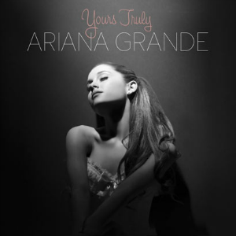
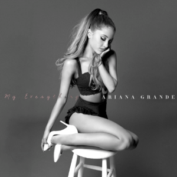
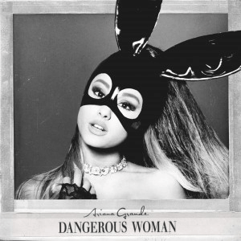
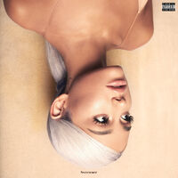
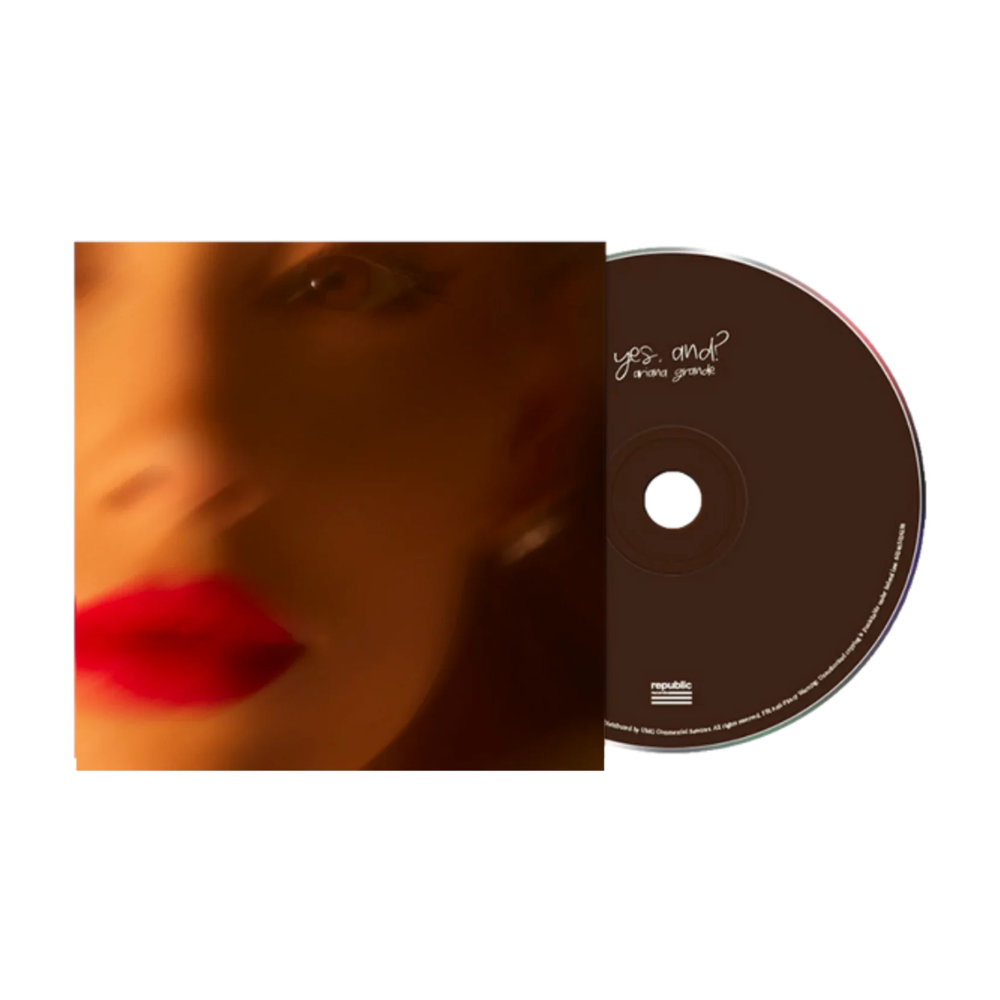

Ariana Grande
Ariana Grande-Butera (born June 26, 1993) is an American singer, songwriter, and actress. Regarded as a pop icon and an influential figure in popular music, she is noted for her four-octave vocal range and her signature use of the whistle register.
Grande began her career at age 15 by appearing in the Broadway musical 13 (2008). She rose to prominence for her performance as Cat Valentine in the Nickelodeon television series Victorious (2010–2013) and its spin-off series Sam & Cat (2013–2014). She signed with Republic Records in 2011.
Grande's debut studio album, Yours Truly (2013), incorporated retro-pop and R&B elements and yielded the successful single "The Way".
- 
My Everything (2014), her second album, experimented with EDM and contained the internationally successful singles "Problem", "Break Free", and the RIAA diamond-certified "Bang Bang". Grande further explored pop and R&B with her third album Dangerous Woman (2016), which solidified her critical and commercial success.
- 
- 
Grande's trap-infused fourth and fifth albums, Sweetener (2018) and Thank U, Next (2019).
- 

After a musical hiatus, Grande ventured into dance music on her seventh album, Eternal Sunshine (2024), which received critical acclaim and produced the number-one singles "Yes, And?" and "We Can't Be Friends (Wait for Your Love)".

- 